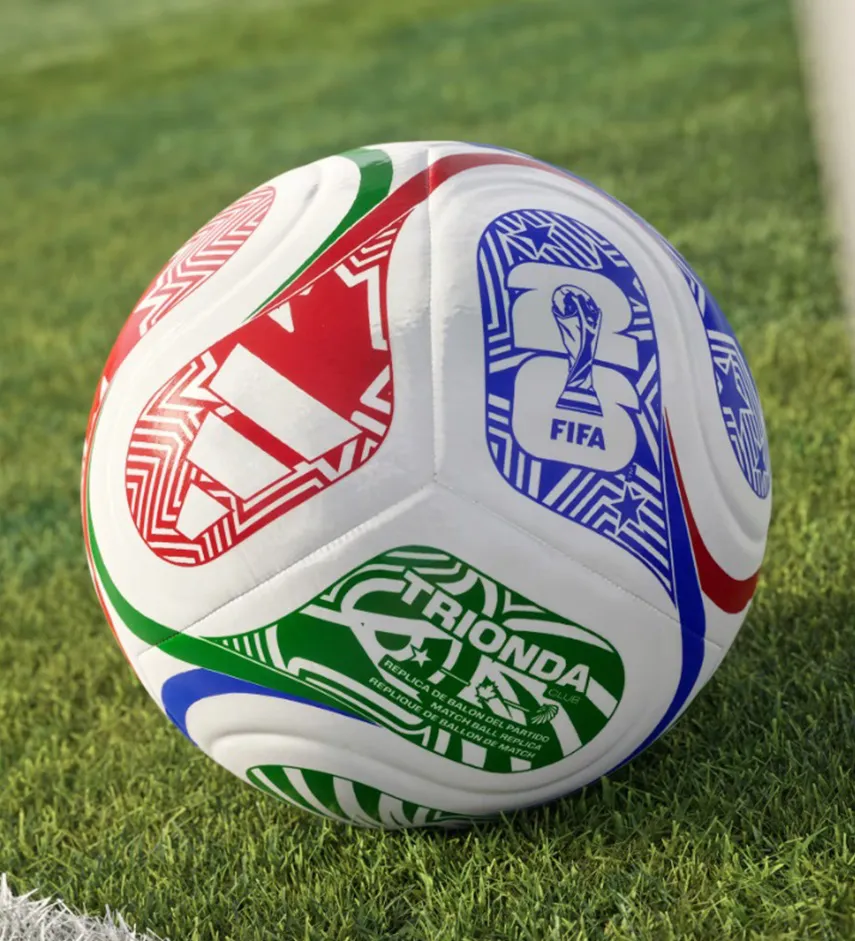
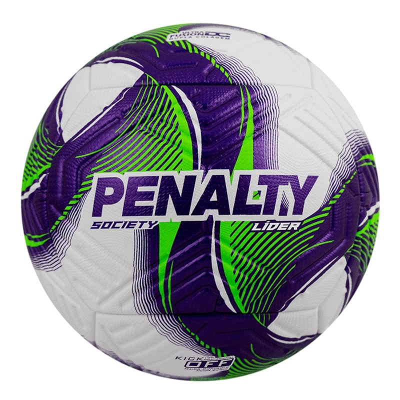
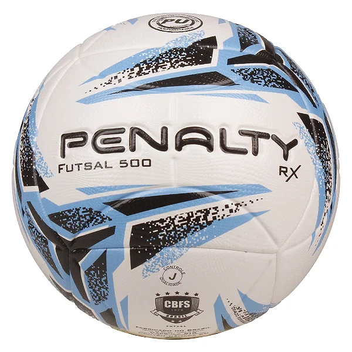

Bola de campo nº 5
Tamanho oficial, costurada à mão e com câmara de butil que segura o ar por mais tempo. Boa para gramado e society. R$ 189,90.
Vendemos bolas de futebol para quem joga de verdade: time de bairro, escolinha, racha de fim de semana e campeonato de empresa.
Todas as bolas saem da loja calibradas e com a costura conferida, e você pode trocar em até 7 dias se vier com defeito.

Tamanho oficial, costurada à mão e com câmara de butil que segura o ar por mais tempo. Boa para gramado e society. R$ 189,90.

Um pouco mais pesada, para quicar menos na grama sintética e responder bem no passe curto. Cobertura reforçada. R$ 139,90.

Menor e com quique baixo, pensada para quadra. Dura mais no piso liso e não escapa do pé. R$ 119,90.
Para escolinhas, times e empresas, fazemos desconto a partir de 5 bolas. Diga quantas precisa e para qual piso, que a gente indica o modelo certo.
Pedir orçamento no WhatsApp